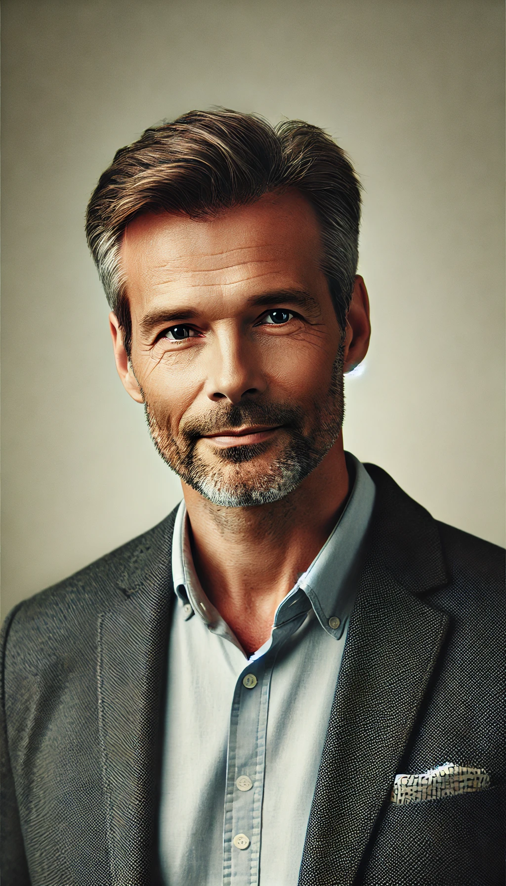

Nina Collins är en visionär inom IT-branschen med över 10 års erfarenhet inom utveckling och implementering av avancerade digitala lösningar. Hon har en examen i datavetenskap och har arbetat som teknisk ledare för både startups och globala företag. Med sin passion för innovation har hon varit med och utvecklat banbrytande teknologier inom AI, molntjänster och automatisering. Som föreläsare är Nina känd för sin förmåga att göra komplexa ämnen lättförståeliga och inspirera sin publik att tänka bortom dagens lösningar. På konferensen kommer hon att tala om de senaste trenderna inom AI-driven utveckling och hur företag kan utnyttja teknologier som kvantberäkning och blockkedjor för att bygga framtidssäkra system. Med en stark tro på inkluderande och hållbara IT-lösningar, ser Nina alltid till att etiska och sociala aspekter tas i beaktande när tekniska lösningar designas. Hennes föreläsning kommer att ge åhörarna en tydlig inblick i vilka teknologier som kommer att forma IT-världen under de kommande åren, och hur organisationer kan förbereda sig för en digital framtid.

Dr. Marlene Edwards är en ledande expert inom cybersäkerhet med över 30 års erfarenhet inom både offentlig och privat sektor. Hon har en doktorsexamen i informationssäkerhet och har arbetat som säkerhetsrådgivare åt flera globala företag samt myndigheter. Genom sin långa karriär har hon utvecklat strategier för att hantera några av de mest avancerade cyberhoten och varit en pionjär inom säkerhet för molnplattformar och kritiska infrastrukturer. Som föreläsare är Dr. Edwards känd för sitt djupa tekniska kunnande, kombinerat med en förmåga att förklara komplexa säkerhetsfrågor på ett sätt som både tekniska experter och företagsledare kan förstå. På konferensen kommer hon att tala om de senaste hotbilderna inom cybersäkerhet, från AI-drivna attacker till nya typer av ransomware, och hur företag kan skydda sig mot dessa. Hon kommer även att fokusera på proaktiva åtgärder och riskhantering för att minimera skador vid eventuella intrång. Med ett starkt engagemang för att bygga hållbara och robusta säkerhetslösningar är Dr. Edwards en av branschens mest respekterade röster. Hennes föreläsning ger deltagarna konkreta insikter och strategier för att möta de växande hoten i den digitala världen.
David Johansson är en internationellt erkänd expert inom AI och maskininlärning, med över 25 års erfarenhet inom teknisk utveckling och innovation. Han har en bakgrund som professor i datavetenskap och har under sin karriär lett flera projekt inom både akademin och industrin för att utveckla AI-drivna system. David har publicerat ett flertal forskningsartiklar och är en eftertraktad rådgivare för företag som vill integrera AI i sina verksamheter. Som föreläsare är David känd för att kombinera teoretisk kunskap med praktiska exempel, vilket gör att han kan fånga både tekniskt kunniga och affärsintresserade publikers intresse. På konferensen kommer han att utforska de senaste framstegen inom maskininlärning, från självlärande algoritmer till AI-driven automation, och hur dessa teknologier kan omvandla företag och branscher. Han kommer även att diskutera de utmaningar och etiska överväganden som följer med AI-utvecklingen. Med en vision om att AI inte bara ska vara en teknik för storskaliga företag utan något som alla organisationer kan dra nytta av, kommer David att ge publiken konkreta insikter om hur de kan utnyttja AI för att förbättra sina verksamheter och effektivisera sina processer.
Michael Turner är en erfaren IT-strateg och konsult med över 30 års erfarenhet inom molnteknologi och digital transformation. Med sin bakgrund som teknisk rådgivare för både stora företag och offentliga organisationer har han hjälpt otaliga verksamheter att migrera till molnet och optimera sina IT-infrastrukturer. Michael har en djup förståelse för både de tekniska och affärsmässiga aspekterna av digital transformation och är en stark förespråkare för hur molnet kan öka innovation och effektivitet. Som föreläsare är Michael känd för sin pedagogiska förmåga att förklara komplexa teknologier på ett enkelt sätt. På konferensen kommer han att tala om de senaste trenderna inom molntjänster, såsom hybridmoln och molnsäkerhet, och hur företag kan använda dessa verktyg för att driva sin digitala transformation framåt. Hans föreläsning kommer att ge åhörarna praktiska insikter i hur de kan utnyttja molnteknologi för att skala sina verksamheter, förbättra säkerheten och minska kostnaderna. Med sin omfattande erfarenhet och strategiska syn på teknikens framtid, ger Michael en inspirerande och informativ presentation om molnteknikens centrala roll i dagens snabba digitala landskap.
Anna Lindgren är en expert inom dataanalys och Big Data, med över 15 års erfarenhet av att omvandla komplexa datamängder till värdefulla insikter för företag. Hon har arbetat som dataingenjör och strategisk rådgivare för stora internationella företag, och hennes spetskompetens ligger i att använda avancerade analysmetoder och AI för att identifiera mönster och trender som kan driva affärstillväxt. Anna har en magisterexamen i statistik och datavetenskap och är känd för sin förmåga att utveckla datadrivna strategier som ger företag en konkurrensfördel på marknaden. Som föreläsare är Anna engagerande och tydlig, och hon har en unik talang för att göra komplexa datarelaterade ämnen tillgängliga för en bred publik. På konferensen kommer hon att fokusera på hur företag kan använda Big Data och prediktiv analys för att optimera sina beslut och affärsprocesser. Hon kommer också att diskutera viktiga verktyg och tekniker för datahantering, samt hur företag kan bygga en datakultur för att bättre utnyttja sin information. Med en passion för innovation och datadrivna affärsmodeller, kommer Anna att ge åhörarna konkreta strategier för hur man kan omvandla data till ett kraftfullt konkurrensvapen i en alltmer digitaliserad värld.